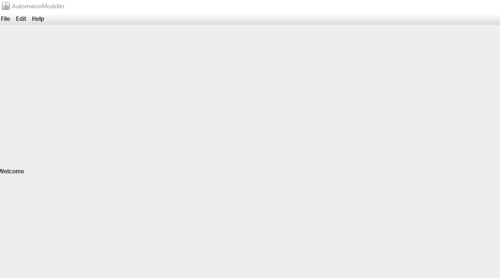
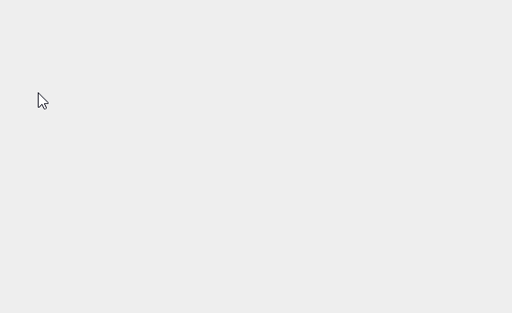

Welcome to general help!
Making new project
To make a new project you should choose the menu point File and choose the type of automaton you want to make.
Making new Deterministic Finite Automaton automaton
If you are making a DFA you can choose if you want to make an empty automaton or make one from a regular expression
- Empty automaton: Make an automaton with no content at all.
-
Automaton from regular expression: Make an automaton from a regular expression given.
Using this option you can only use the operators such as: *, ( , ) and plain characters.

Making a new Pushdown Automaton
If you are making a PDA you can use only an empty one. However, you have to choose a starting symbol.
Open an existing project
To open an existing project you should choose the menu point File and choose the type of automaton you want to open.
Open a Deterministic Finite Automaton
Select Open DFA and found your own file.
File format:
#AutomatonController-Model
type : DFA
states : [
{"name":"<name>","x":<x coordinate>,y:<y coordinate>,"accceptState":<is accept state>,"startState:"<is start state>},
...
]
transitons : [
{ <start state> ---------<transition character>---------> <end state> },
...
]
Meanings of the members
- type: The type of the automaton (DFA in this case)
- states: The list of states in the automaton, separated by commas
- transitons: The list of transitions in the automaton, separated by commas
Meanings of the tags
- name: The name of the state
- x coordinate: The x coordinate of the state
- y coordinate: The y coordinate of the state
- is accept state: Is the state accept state
- is start state: Is the state start state
- start state: The name of the start state of the transition
- transition character: The charachter of the transition
- end state: The name of the end state of the transition
Open a Pushdown Automaton
Select Open PDA and found your own file.
File format:
#AutomatonModeller-Model
type : PDA
startSymbol :
states : [
{"name":"<name>","x":<x coordinate>,y:<y coordinate>,"accceptState":<is accept state>,"startState:"<is start state>},
...
]
transitions : [
{ <tstart state> ---------<lttransition characte> / <popped item from stack>---------> <end state> / [<pushed items to stack>] },
...
]
Meanings of the members
- type: The type of the automaton (DFA in this case)
- states: The list of states in the automaton, separated by commas
- transitons: The list of transitions in the automaton, separated by commas
Meanings of the tags
- name: The name of the state
- x coordinate: The x coordinate of the state
- y coordinate: The y coordinate of the state
- is accept state: Is the state accept state
- is start state: Is the state start state
- start state: The name of the start state of the transition
- transition character: The charachter of the transition
- popped item from stack: The item need to be popped from stack
- end state: The name of the end state of the transition
- pushed items to stack: The items need to be pushed into the stack
Using of states
This chapter is about how to make and use states
Type of states
Simple state
A simple state has a name but no other specialities
Accept state
An accept state has a name, it accepts a word if the reading ends here
Start state
A start state has a name, the reading is starting from here

Making a new state
To make a new state you have to right-click on the screen and choose the right option, and add a name.
Simple state
Accept state

Start state
Deleting states
To delete a state use right-click and choose
Changing the type of a state
You can change the type of a state to accept or/and start state. There can be limitless accept state but only one start state.
State to accept state
State to start state
Another start state
Make transitions
You can make transitions between states using the right-click menu. There are two types of transitions according to the type of the automaton.
Transition for Deterministic Finite Automatons
To make a DFA transition you have to click on a state and choose Add transition, after you have to choose the next state for the transition. Then you have to give the transition character between the two elements.
Transition for Pushdown Automatons
To make a PDA transition you have to click on a state and choose Add transition, after you have to choose the next state for the transition. Then you have to give the transition character between the two elements, the character that needs to be popped from the stack, and the array of characters that need to be pushed in the stack.
Right syntax
[transition character]/[char needs to be popped from stack]->[chars need to be pushed in the stack]
Reading input words
You can use an automaton to read given input words and calculate if the given word is accepted or not. For this you can use the controlling panel on the left of a project.
Add a new word to read
To add a new word select Add new word option and write in the desired word
Reading a character
To read one character of an input word you should use the Next button. It reads the next character and modifies the automaton showing the current state and the used transition.
Reading a complete word
You can read a whole word with using the buton Run. It's iterating through a word and use the same function as next. After reading the last character's a message informs you if the given word is accepted or nor.
You can set the speed of the reading with the slider.
Stop running of reading
If you started the reading of a word you can stop it with the button Stop.
Step by step reading for Pushdown Automatons
You can read word with a Pushdown automaton in step by step mode using the chackbox with the label: Step by step.
It means the reading is divided to three parts:
- POP: Poping of the first item of the stack.
- READ: Reading of the next character and move the automaton to the current state.
- PUSH: Pushing the given items one by one